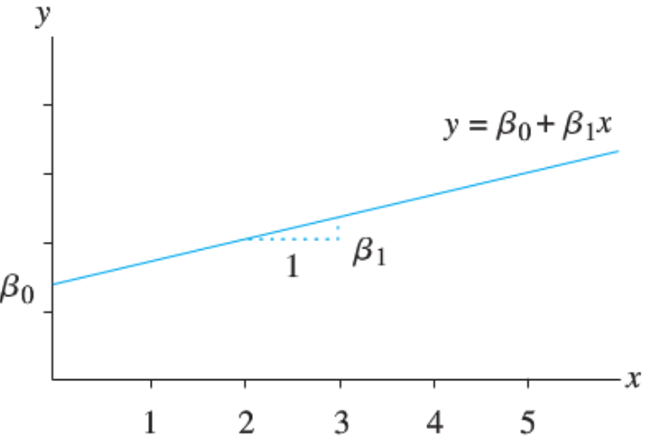
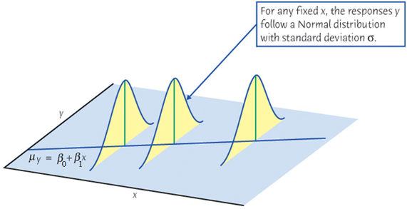
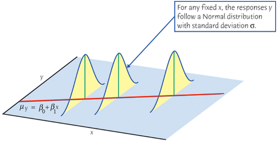
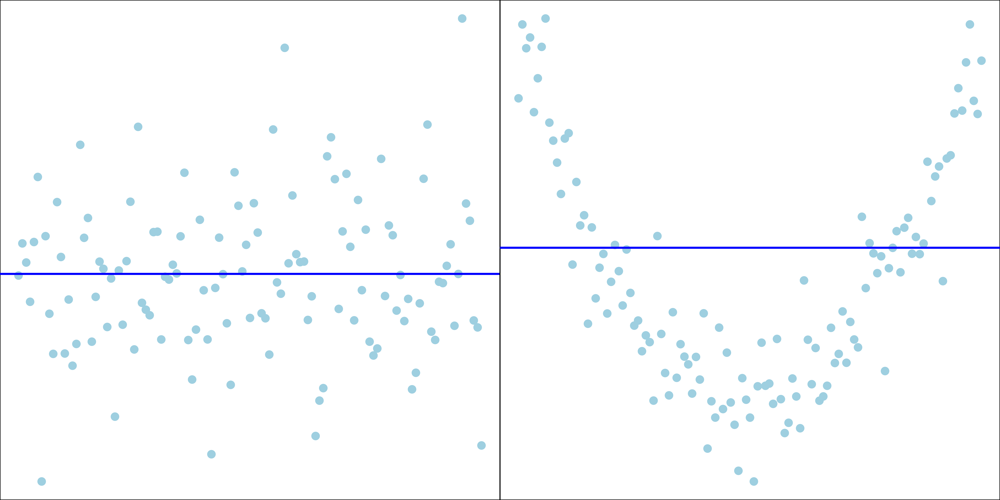
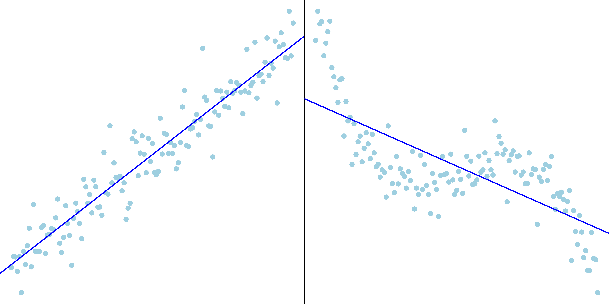
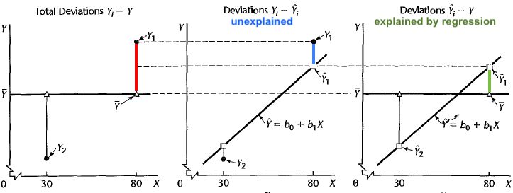
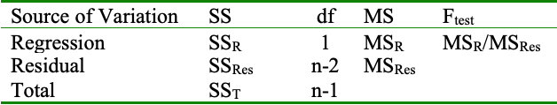

Regression
MATH 4720/MSSC 5720 Introduction to Statistics
Regression
What is Regression
Regression models the relationship between one or more numerical/categorical response variables \((Y)\) and one or more numerical/categorical explanatory variables \((X)\).
A regression function \(f(X)\) describes how a response variable \(Y\), on average, changes as an explanatory variable \(X\) changes.
Examples:
college GPA \((Y)\) vs. ACT/SAT score \((X)\)
sales \((Y)\) vs. advertising expenditure \((X)\)
crime rate \((Y)\) vs. median income level \((X)\)
- Regression models the relationship between a numerical response variable (dependent variable) and one or more (numerical/categorical) explanatory variables (independent variables, predictors, or covariates).
- A regression function describes how a response variable \(Y\) changes as an explanatory variable \(X\) changes.
- The true relationship between \(X\) and \(Y\), the regression function, is unknown.
- The goal of regression is to estimate the regression function and use it to predict value of \(Y\) given a value of \(X\).
- Examples:
- Relationship between college GPA (\(Y\)) and ACT/SAT scores (\(X\))
- Relationship between sales (\(Y\)) and advertising expenditure (\(X\))
- Relationship between crime rate (\(Y\)) and median income level (\(X\))
Unknown Regression Function
The true relationship between \(X\) and the mean of \(Y\), the regression function \(f(X)\), is unknown.
The collected data \((x_1, y_1), (x_2, y_2), \dots, (x_n, y_n)\) is all we know and have.
Goal: estimate \(f(X)\) from our data and use it to predict value of \(Y\) given any value of \(X\).

Simple Linear Regression
- Start with simple linear regression:
- Only one predictor \(X\) (known and constant) and one response variable \(Y\)
- the regression function used for predicting \(Y\) is a linear function.
- use a regression line in a X-Y plane to predict the value of \(Y\) for a given value of \(X = x\).
. . .
Math review: A linear function \(y = f(x) = \beta_0 + \beta_1 x\) represents a straight line
\(\beta_1\): slope, the amount by which \(y\) changes when \(x\) increases by one unit.
\(\beta_0\): intercept, the value of \(y\) when \(x = 0\).
The linearity assumption: \(\beta_1\) does not change as \(x\) changes.


Sample Data: Relationship Between X and Y
Real data \((x_i, y_i), i = 1, 2, \dots, n\) do not form a perfect straight line!
\(y_i = \beta_0+\beta_1x_i + \color{red}{\epsilon_i}\)

When we collect our data, at any given level of \(X = x\), \(y\) is assumed being drawn from a normal distribution (for inference purpose).
Its value varies around and will not be exactly equal to its mean \(\mu_y\).

When we collect our data, at any given level of \(X = x\), \(y\) is assumed being drawn from a normal distribution (for inference purpose).
Its value varies around and will not be exactly equal to its mean \(\mu_y\).

- The mean of \(Y\) and \(X\) form a straight line.

Simple Linear Regression Model (Population)
For the \(i\)-th measurement in the target population,
\[Y_i = \beta_0 + \beta_1X_i + \epsilon_i\]
\(Y_i\): the \(i\)-th value of the response (random) variable.
\(X_i\): the \(i\)-th known fixed value of the predictor.
\(\epsilon_i\): the \(i\)-th random error with assumption \(\epsilon_i \stackrel{iid}{\sim} N(0, \sigma^2)\).
\(\beta_0\) and \(\beta_1\) are model coefficients.
\(\beta_0\), \(\beta_1\) and \(\sigma^2\) are fixed unknown parameters to be estimated from the sample data once we collect them.
.question[ What is the distribution of \(Y_i\) given a value of \(X = x\)?
Important Features of Model \(Y_i = \beta_0 + \beta_1X_i + \epsilon_i\)
\(\epsilon_i \stackrel{iid}{\sim} N(0, \sigma^2)\)
\[\begin{align*} \mu_{Y_i \mid X_i} = \beta_0 + \beta_1X_i \end{align*}\]
The mean response \(\mu_{Y\mid X}\) has a straight-line relationship with \(X\) given by a population regression line \[\mu_{Y\mid X} = \beta_0 + \beta_1X\]

Important Features of Model \(Y_i = \beta_0 + \beta_1X_i + \epsilon_i\)
\(\epsilon_i \stackrel{iid}{\sim} N(0, \sigma^2)\) \[\begin{align*} \mathrm{Var}(Y_i \mid X_i) &= \mathrm{Var}(\epsilon_i) = \sigma^2 \end{align*}\] The variance of \(Y\) does not depend on \(X\).

- The variation of Y is the same no matter what value of x is.
Important Features of Model \(Y_i = \beta_0 + \beta_1X_i + \epsilon_i\)
\(\epsilon_i \stackrel{iid}{\sim} N(0, \sigma^2)\) \[\begin{align*} Y_i \mid X_i \stackrel{indep}{\sim} N(\beta_0 + \beta_1X_i, \sigma^2) \end{align*}\] For any fixed value of \(X_i = x_i\), the response \(Y_i\) varies with \(N(\mu_{Y_i\mid x_i}, \sigma^2)\).

. . .
- Job: Collect data and estimate the unknown parameters \(\beta_0\), \(\beta_1\) and \(\sigma^2\)!
Idea of Fitting
- Interested in \(\beta_0\) and \(\beta_1\) in the following sample regression model: \[\begin{align*} y_i = \beta_0 + \beta_1~x_{i} + \epsilon_i, \end{align*}\]
- OK. once we collect the data, we have a sample regression model.
- Here I use small x and y to represent the collected data.
- Given this model, we’re interested in \(\beta_0\) (population parameter for the intercept) and \(\beta_1\) (population parameter for the slope) because once we know \(\beta_0\) and \(\beta_1\), we know the exact shape of \(f\) and we know the relationship of \(y\) and \(x\), and given any value of \(x\), we can predict its corresponding value of \(y\) using the regression line \(\hat{y}_{i} = \beta_0 + \beta_1~x_{i}\).
- But again the population parameters are unknown to us.
- \(\hat{y}_i = E(Y|X_i=x_i)\)
. . .
Use sample statistics \(b_0\) and \(b_1\) computed from our sample data to estimate \(\beta_0\) and \(\beta_1\).
\(\hat{y}_{i} = b_0 + b_1~x_{i}\) is called fitted value of \(y_i\), a point estimate of the mean \(\mu_{y|x_i}\) and \(y_i\) itself.
- \(b_0\): intercept of the sample regression line
- \(b_1\): slope of the sample regression line
Fitting a Regression Line \(\hat{Y} = b_0 + b_1X\)
Given the sample data \(\{ (x_1, y_1), (x_2, y_2), \dots, (x_n, y_n)\},\)
Which sample regression line is the best?
What are the best estimators \(b_0\) and \(b_1\) for \(\beta_0\) and \(\beta_1\)?

- Now suppose we already get our sample, and now we are trying to use the sample to get a sample regression line, and hopefully, the sample regression line and the population regression line are alike. look similarly.
- So people usually ask
- Which sample regression line is the best?
- What are the best estimators \(b_0\) and \(b_1\) for \(\beta_0\) and \(\beta_1\)?
- After all, given the data, we can generate so many different straight lines, and we need a criterion to help us determine which line is the best in some sense. Right!
Fitting a Regression Line \(\hat{Y} = b_0 + b_1X\)
Given the sample data \(\{ (x_1, y_1), (x_2, y_2), \dots, (x_n, y_n)\},\)
Which sample regression line is the best?
What are the best estimators \(b_0\) and \(b_1\) for \(\beta_0\) and \(\beta_1\)?

What does “best” mean? Ordinary Least Squares (OLS)
- Choose \(b_0\) and \(b_1\), or sample regression line \(b_0 + b_1x\) that minimizes the sum of squared residuals \(SS_{res}\)
\[SS_{res} = e_1^2 + e_2^2 + \dots + e_n^2 = \sum_{i = 1}^n e_i^2,\] where the residual \(e_i = y_i - \hat{y}_i = y_i - (b_0 + b_1x_i)\).
. . .
- If \(b_0\) and \(b_1\) are the best estimators,
\[\small{\begin{align} SS_{res} &= (y_1 - b_0 - b_1x_1)^2 + (y_2 - b_0 - b_1x_2)^2 + \dots + (y_n - b_0 - b_1x_n)^2\\ &= \sum_{i=1}^n(y_i - b_0 - b_1x_i)^2 \end{align}}\] that is the smallest comparing to any other \(SS_{res} = \sum_{i=1}^n(y_i - a_0 - a_1x_i)^2\) that uses another pair of values \((a_0, a_1) \ne (b_0, b_1)\).
- Now the question is How do we get \(b_0\) and \(b_1\) that well estimate \(\beta_0\) and \(\beta_1\)?
- We choose \(b_0\) and \(b_1\), or regression line \(b_0 + b_1x\) that minimizes the sum of squared residuals.
- If we define residual as \(e_i = y_i - \hat{y}_i\), then the sum of squared residuals is \(\sum_{i = 1}^n e_i^2\).
- And this approach that estimates the population parameters \(\beta_0\) and \(\beta_1\) or the population regression line is called Ordinary Least Squares method.
Visualizing Residuals

That’s see the idea of Ordinary Least Squares visually. Here just showed the data. - Later we will work on the data set together.
Visualizing Residuals (cont.)

- All right, with the data, this figure also shows the least squares regression line, and the fitted value of \(y\) for each \(x\) in the training data, which are those red points.
- The fitted values of y are right on the regression line.
- Now the question is, how do we find this line?
- Given a line, we can have predicted values of y, right?
- Then what is residual on the plot? The residual will be the difference between the true observation y and the fitted value of y given any value of x.
- So a residual in the plot will be a vertical bar at the value of x with two ends of the bar \(y\) and \(\hat{y}\), right?
- (Show on board)
- (add \(y_i = b_0+b_1x_i\) and residual line)
Visualizing Residuals (cont.)

- Here shows all the residuals in vertical bars.
- least squares line is the line such that the sum of all the squared residuals is minimized.
- Why we square the residuals?
- It’s mathematically more convenient.
- Squaring emphasizes larger differences
Least Squares Estimates (LSE)
- The least squares approach choose \(b_0\) and \(b_1\) to minimize the \(SS_{res}\), i.e.,
\[(b_0, b_1) = \arg \min_{\alpha_0, \alpha_1} \sum_{i=1}^n(y_i - \alpha_0 - \alpha_1x_i)^2\]
. . .
MATH 1450/1455 …
\[\color{red}{b_0 = \overline{y} - b_1\overline{x}}\]
\[\color{red}{b_1 = \frac{\sum_{i=1}^n(x_i - \overline{x})(y_i - \overline{y})}{\sum_{i=1}^n(x_i - \overline{x})^2} = r \frac{\sqrt{S_{yy}}}{\sqrt{S_{xx}}}},\] where \(S_{xx} = \sum_{i=1}^n(x_i - \overline{x})^2\) and \(S_{yy} = \sum_{i=1}^n(y_i - \overline{y})^2\)
. . .
What can we learn from the formula of \(b_0\) and \(b_1\)?
- The LS regression line passes through the centroid.
- \(b_1\) is kinda like a scaled covariance of X and Y.
R Lab: mpg Data
# A tibble: 234 × 11
manufacturer model displ year cyl trans drv cty hwy fl class
<chr> <chr> <dbl> <int> <int> <chr> <chr> <int> <int> <chr> <chr>
1 audi a4 1.8 1999 4 auto… f 18 29 p comp…
2 audi a4 1.8 1999 4 manu… f 21 29 p comp…
3 audi a4 2 2008 4 manu… f 20 31 p comp…
4 audi a4 2 2008 4 auto… f 21 30 p comp…
5 audi a4 2.8 1999 6 auto… f 16 26 p comp…
6 audi a4 2.8 1999 6 manu… f 18 26 p comp…
7 audi a4 3.1 2008 6 auto… f 18 27 p comp…
8 audi a4 quattro 1.8 1999 4 manu… 4 18 26 p comp…
9 audi a4 quattro 1.8 1999 4 auto… 4 16 25 p comp…
10 audi a4 quattro 2 2008 4 manu… 4 20 28 p comp…
# ℹ 224 more rows
R Lab: Highway MPG hwy vs. Displacement displ
plot(x = mpg$displ, y = mpg$hwy,
las = 1, pch = 19, col = "navy", cex = 0.5,
xlab = "Displacement (litres)", ylab = "Highway MPG",
main = "Highway MPG vs. Engine Displacement (litres)")
- Usually, when we get data, the first thing is plotting your data, doing some exploratory data analysis, and see if there is useful information out there that may help us build an appropriate model.
- To make a scatter plot, we can simply use the plot() function, and put displ in x axis and hwy in the y axis.
- To grab a variable or a column of a data frame, we can use the dollar sign, the same way as a list extracting an element.
- The rest of arguments are optional, they are just used to decorate your plot. You can generate a plot without specifying any of them.
- And because it seems to a linear trend downwards. We could fit a simple linear regression to the data. Right
R Lab: Fit Simple Linear Regression
## all elements in reg_fit
names(reg_fit) [1] "coefficients" "residuals" "effects" "rank"
[5] "fitted.values" "assign" "qr" "df.residual"
[9] "xlevels" "call" "terms" "model" ## use $ to extract an element of a list
reg_fit$coefficients(Intercept) displ
35.70 -3.53 . . .
\(\widehat{hwy}_{i} = b_0 + b_1 \times displ_{i} = 35.7 - 3.5 \times displ_{i}\)
\(b_1\): For one unit (litre) increase of the displacement, we expect the highway MPG to be decreased, on average, by 3.5.
In R, to fit a linear regression model, it cannot be easier.
We just need to use the command lm(). We put a formula in the function, y ~ x, and let R know which data set you are considering.
That’s it. And I save the fitted result in an object called reg_fit.
You can see lm() function returns a list.
We can grab the coefficient estimates this way.
So your sample regression line is like this.
R Lab Fitted Values of \(y\)
R Lab Add a Regression Line

Estimation for \(\sigma^2\)
Think of \(\sigma^2\) as variance around the line or the mean square (prediction) error.
The estimate of \(\sigma^2\) is the mean square residual \(MS_{res}\):
\[\hat{\sigma}^2 = MS_{res} = \frac{SS_{res}}{n-2} = \frac{\sum_{i=1}^n(y_i - \hat{y}_i)^2}{n-2}\]
- \(MS_{res}\) is often shown in computer output as \(\texttt{MS(Error)}\) or \(\texttt{MS(Residual)}\).
- So we are done estimation for \(beta\). Let’s talk about the estimation of \(\sigma^2\).
- The estimate of \(\sigma^2\), denoted as \(\hat{\sigma}^2\) or \(s_{\epsilon}^2\), based on the sample data is residual sum of squares divided by \(n-2\), the degrees of freedom
- It can be shown that \(E(SS_{res}) = (n-2)\sigma^2\). That is, \(\hat{\sigma}^2\) is an unbiased estimator for \(\sigma^2\). 👍
R Lab Standard Error of Regression
(summ_reg_fit <- summary(reg_fit))
Call:
lm(formula = hwy ~ displ, data = mpg)
Residuals:
Min 1Q Median 3Q Max
-7.104 -2.165 -0.224 2.059 15.010
Coefficients:
Estimate Std. Error t value Pr(>|t|)
(Intercept) 35.698 0.720 49.5 <2e-16 ***
displ -3.531 0.195 -18.1 <2e-16 ***
---
Signif. codes: 0 '***' 0.001 '**' 0.01 '*' 0.05 '.' 0.1 ' ' 1
Residual standard error: 3.84 on 232 degrees of freedom
Multiple R-squared: 0.587, Adjusted R-squared: 0.585
F-statistic: 329 on 1 and 232 DF, p-value: <2e-16- How do we get sigma_hat in R?
- Well you could grab residuals and df from lm fit result reg_fit, and use the formula to calculate the sigma_hat. sqrt(sum(reg_fit\(residuals^2) / reg_fit\)df.residual)
- If you want R to do the calculation for you, you can get the summary of the fitted result reg_fit.
- Then the sigma hat is right here.
R Lab Standard Error of Regression
# lots of fitted information saved in summary(reg_fit)!
names(summ_reg_fit) [1] "call" "terms" "residuals" "coefficients"
[5] "aliased" "sigma" "df" "r.squared"
[9] "adj.r.squared" "fstatistic" "cov.unscaled" # residual standard error (sigma_hat)
summ_reg_fit$sigma[1] 3.84[1] 3.84- Here shows the fitted information saved in summary(reg_fit)
- You see sigma is right here. So you just extract that value if you need.
Confidence Interval for \(\beta_1\)
- \(\frac{b_1 - \beta_1}{\sqrt{\hat{\sigma}^2/S_{xx}}} \sim t_{n-2}\)
. . .
- \((1-\alpha)100\%\) CI for \(\beta_1\) is \(b_1 \pm t_{\alpha/2, n-2}\sqrt{\hat{\sigma}^2/S_{xx}}\)
. . .
confint(reg_fit, level = 0.95) 2.5 % 97.5 %
(Intercept) 34.28 37.12
displ -3.91 -3.15Hypothesis Testing: \(\beta_1\)
\(H_0: \beta_1 = \beta_1^0 \quad H_1: \beta_1 \ne \beta_1^0\)
Test statistic: Under \(H_0\),
\[t_{test} = \frac{b_1 - \color{red}{\beta_1^0}}{\sqrt{\frac{\hat{\sigma}^2}{S_{xx}}}} \sim t_{n-2}\]
- Reject \(H_0\) in favor of \(H_1\) if
- \(|t_{test}| > t_{\alpha/2, \, n-2}\)
- \(\text{p-value} = 2P(t_{n-2} > |t_{test}|) < \alpha\)
- in addition to estimation, we may be interested in testing.
- To do the testing on \(\beta_1\), the testing procedure is basically the same as the procedure for population mean \(\mu\) we reviewed last week.
- Usually \(\beta_1^0 = 0\), but we may be interested in other values.
- good growth \(\beta_1 > 2\)
R Lab Testing on \(\beta_0\) and \(\beta_1\)
summ_reg_fit$coefficients Estimate Std. Error t value Pr(>|t|)
(Intercept) 35.70 0.720 49.6 2.12e-125
displ -3.53 0.195 -18.2 2.04e-46- Testing \(H_0: \beta_0 = 0\) and \(H_0: \beta_1 = 0\)
Interpretation of Testing Results
\(H_0: \beta_1 = 0 \quad H_1: \beta_1 \ne 0\)
Failing to reject \(H_0: \beta_1 = 0\) implies there is no linear relationship between \(Y\) and \(X\).
- So back to the testing on \(\beta_1\).
- If we do not reject \(H_0\), it implies there is no linear relationship between \(Y\) and \(X\). Right? Because \(\beta_1\), the slope of the regression line is pretty much 0.
. . .

- But it actually has two cases. One \(x\) and \(y\) may have no relationship at all, or they don’t have linear relationship but have another kind of relationship, like quadratic.
- So we have to be careful when we interpret the testing result. OK.
. . .
If we reject \(H_0: \beta_1 = 0\), does it mean \(X\) and \(Y\) are linearly related?
We have to be more careful and precise on what we are claiming.
Test of Significance of Regression
-
Rejecting \(H_0: \beta_1 = 0\) could mean
- the straight-line model is adequate
- better results could be obtained with a more complicated model

-
Rejecting \(H_0: \beta_1 = 0\) could mean
- the straight-line model is adequate
- better results could be obtained with a more complicated model even though there is a linear effect of \(x\)
Analysis of Variance (ANOVA) Approach
- Let’s talk about ANOVA, the idea of partitioning the total variability.
\(X\) - \(Y\) Relationship Explains Some Deviation
Suppose we only have data \(Y\) and have no information about \(X\) and relationship between \(X\) and \(Y\). How do we predict a value of \(Y\)?
- For example, suppose we only have MPG information for the sample of cars and have no info about displacement and their relationship. How do we predict a car’s MPG?
. . .
Our best guess would be \(\overline{y}\) if the data have no pattern, i.e., \(\hat{y}_i = \overline{y}\).
Treat \(X\) and \(Y\) as uncorrelated.
The (total) deviation from the mean is \((y_i - \overline{y})\)
. . .
If \(X\) and \(Y\) are linearly related, fitting a linear regression model helps us predict the value of \(Y\) when the value of \(X\) is provided.
\(\hat{y}_i = b_0 + b_1x_i\) is closer to \(y_i\) than \(\overline{y}\).
The regression model explains some deviation of \(y\).
- When we have no information about the relationship between \(X\) and \(Y\), to predict a value of \(y\) using the same value given any value of \(x\).
- When \(X\) and \(Y\) are uncorrelated, the regression model is not helping predict \(Y\) because \(X\) provides no information about \(Y\).
- It means \(b_1 = 0\) and \(\hat{y}_i = \bar{y}\) for all values of \(X\).
- The result is the same as the one when we only have data of \(Y\).
- This prediction deviation \((y_i - \overline{y})\) is generally the biggest deviation we can have when we have no information about how y varies or how y is affected by others.
Partition of Deviation
Total deviation = Deviation explained by regression + Unexplained deviation
\((y_i - \overline{y}) = (\hat{y}_i - \overline{y}) + (y_i - \hat{y}_i)\)
\((19 - 9) = (13 - 9) + (19 - 13)\)

If \(X\) and \(Y\) are actually linearly related, fitting a linear regression helps us predict the value of \(Y\) when the value of \(X\) is provided.
It means that \(\hat{y}_i = b_0 + b_1x_i\) is closer to \(y_i\) than \(\overline{y}\).
Intuitively, the regression model explains some deviation of \(y\) by the predictor \(X\).
\(X\) does contain some useful and valuable information for predicting value of \(Y\).
So, we can actually Partition the total deviation into two parts.
Partition of deviation: Total deviation = Explained deviation by regression + Unexplained deviation
\((y_i - \overline{y}) = (\hat{y}_i - \overline{y}) + (y_i - \hat{y}_i)\)
Sum of Squares (SS)
\(\sum_{i=1}^n(y_i - \overline{y})^2 = \sum_{i=1}^n(\hat{y}_i - \overline{y})^2 + \sum_{i=1}^n(y_i - \hat{y}_i)^2\)
Total SS \((SS_T)\) = Regression SS \((SS_R)\) + Residual SS \((SS_{res})\)
\(df_T = df_R + df_{res}\)
\(\color{blue}{(n-1) = 1 +(n-2)}\)
- Total variability = variability explained by regression + unexplained variability
- \(\sum_{i=1}^n(y_i - \overline{y})^2 = \sum_{i=1}^n(\hat{y}_i - \overline{y})^2 + \sum_{i=1}^n(y_i - \hat{y}_i)^2 + 2\sum_{i=1}^n(\hat{y}_i - \overline{y})(y_i - \hat{y}_i)\)
- \(df_T = n - 1\): lose 1 df with constraint \(\sum_{i=1}^n(y_i - \overline{y}) = 0\)
- \(df_R = 1\): all \(\hat{y}_i\) are on the regression line with 2 dfs (intercept and slope), but with constraint \(\sum_{i=1}^n(\hat{y}_i - \overline{y}) = 0\)
- \(df_{res} = n - 2\): lose 2 dfs because \(\beta_0\) and \(\beta_1\) are estimated by \(b_0\) and \(b_1\), which are linear combo of \(y_i\)
- degrees of freedom is the equivalent number of values in the calculation of a statistic that are free to vary.
- \(SS_R = b_1S_{xy}\) or \(SS_{res} = SS_T - b_1S_{xy}\).
ANOVA for Testing Significance of Regression

A larger value of \(F_{test}\) indicates that regression is significant.
-
Reject \(H_0\) if
- \(F_{test} > F_{\alpha, 1, n-2}\)
- \(\text{p-value} = P(F_{1, n-2} > F_{test}) < \alpha\).
The ANOVA is designed to test \(H_0\) that all predictors have no value in predicting \(y\).
In SLR, the \(F\)-test of ANOVA gives the same result as a two-sided \(t\)-test of \(H_0: \beta_1=0\).
- ANOVA is used for testing significance of regression.
- It is testing if any predictors or regressors have explanatory power for predicting y.
- In other words, it is testing if the whole regression model is useful or not.
- Here is the ANOVA table.
- \(H_0: \beta_1 = 0\)
- A larger value of \(F_{test}\) indicates that regression is significant.
- Reject \(H_0\) in favor of \(H_1\) if \(F_{test} > F_{\alpha, 1, n-2}\) or \(\text{p-value} = P(F_{1, n-2} > F_{test}) < \alpha\).
- The ANOVA is designed to test \(H_0\) that all predictors have no value in predicting \(y\).
- In SLR, there is only one predictor, and hence the \(F\)-test of ANOVA gives the same result as a two-sided \(t\)-test of \(H_0: \beta_1=0\).
- If we have \(k \ge 2\) predictors, the \(F\)-test is testing \(H_0: \beta_1=\beta_2=\cdots=\beta_k=0\).
R Lab ANOVA Table
anova(reg_fit)Analysis of Variance Table
Response: hwy
Df Sum Sq Mean Sq F value Pr(>F)
displ 1 4848 4848 329 <2e-16 ***
Residuals 232 3414 15
---
Signif. codes: 0 '***' 0.001 '**' 0.01 '*' 0.05 '.' 0.1 ' ' 1- For \(H_0: \beta_1 = 0\) in SLR, \(t_{test}^2 = F_{test}\).
Estimate Std. Error t value Pr(>|t|)
(Intercept) 35.70 0.720 49.6 2.12e-125
displ -3.53 0.195 -18.2 2.04e-46[1] 329- For \(H_0: \beta_1 = 0\), \(t_{test}^2 = \left(\frac{b_1}{\sqrt{MS_{res}/S_{xx}}}\right)^2 = \frac{b_1^2S_{xx}}{MS_{res}} = \frac{b_1S_{xy}}{MS_{res}} = \frac{MS_R}{MS_{res}} = F_{test}\)
Coefficient of Determination
- The coefficient of determination \((R^2)\) is the proportion of the variation in \(y\) that is explained by the regression model:
\[R^2 = \frac{SS_R}{SS_T} =\frac{SS_T - SS_{res}}{SS_T} = 1 - \frac{SS_{res}}{SS_T}\]
\(R^2\) as the proportionate reduction of total variation associated with the use of \(X\).
(a) \(\hat{y}_i = y_i\) and \(\small SS_{res} = \sum_{i=1}^n(y_i - \hat{y}_i)^2 = 0\). (b) \(\hat{y}_i = \overline{y}\) and \(\small SS_R = \sum_{i=1}^n(\hat{y}_i - \overline{y})^2 = 0\).

- coefficient of determination can be used to measure the quality of our regression or the explanatory power of regressors.
- Here (a) and (b) are two extreme cases.
- In (a), the fitted value = the true observation. So the regression model explains all the variation in \(Y\), and hence \(R^2 = 1\).
- In (b), the fitted value = mean of y as if we don’t have information about \(x\) or \(x\) is totally useless in predicting \(Y\). In this case, the regression model explains no the variation in \(Y\), and all variation remain unexplained. So \(R^2 = 0\).
R Lab \(R^2\)
Call:
lm(formula = hwy ~ displ, data = mpg)
Residuals:
Min 1Q Median 3Q Max
-7.104 -2.165 -0.224 2.059 15.010
Coefficients:
Estimate Std. Error t value Pr(>|t|)
(Intercept) 35.698 0.720 49.5 <2e-16 ***
displ -3.531 0.195 -18.1 <2e-16 ***
---
Signif. codes: 0 '***' 0.001 '**' 0.01 '*' 0.05 '.' 0.1 ' ' 1
Residual standard error: 3.84 on 232 degrees of freedom
Multiple R-squared: 0.587, Adjusted R-squared: 0.585
F-statistic: 329 on 1 and 232 DF, p-value: <2e-16summ_reg_fit$r.squared[1] 0.587Prediction
Predicting the Mean Response
- With predictor value \(x = x_0\), we want to estimate the mean response \(\mu_{y|x_0} = \beta_0 + \beta_1 x_0\).
- The mean highway MPG \(\mu_{y|x_0}\) when displacement is \(x = x_0 = 5.5\).
. . .
- If \(x_0\) is within the range of \(x\), an unbiased point estimator for \(\mu_{y|x_0}\) is
\[\hat{\mu}_{y | x_0} = b_0 + b_1 x_0\]
. . .
- The \((1-\alpha)100\%\) CI for \(\mu_{y|x_0}\) is
\[\hat{\mu}_{y | x_0} \pm t_{\alpha/2, n-2} \hat{\sigma}\sqrt{\frac{1}{n} + \frac{(x_0 - \overline{x})^2}{S_{xx}}}\]
. . .
Does the length of the CI for \(\mu_{y|x_0}\) stay the same at any location of \(x_0\)?
-
With predictor value \(x = x_0\), we want to estimate the mean response \(E(y\mid x_0) = \mu_{y|x_0} = \beta_0 + \beta_1 x_0\).
- The mean highway MPG \(E(y \mid x_0)\) when displacement is \(x = x_0 = 5.5\).
If \(x_0\) is within the range of \(x\), an unbiased point estimator for \(E(y\mid x_0)\) is \[\widehat{E(y\mid x_0)} = \hat{\mu}_{y | x_0} = b_0 + b_1 x_0\]
The \((1-\alpha)100\%\) CI for \(E(y\mid x_0)\) is \(\boxed{\hat{\mu}_{y | x_0} \pm t_{\alpha/2, n-2} \hat{\sigma}\sqrt{\frac{1}{n} + \frac{(x_0 - \overline{x})^2}{S_{xx}}}}\).
## CI for the mean response
predict(reg_fit, newdata = data.frame(displ = 5.5), interval = "confidence", level = 0.95) fit lwr upr
1 16.3 15.4 17.2
Predicting New Observations
- Predict the value of a new observation \(y_0\) with \(x = x_0\).
- The highway MPG of a car \(y_0(x_0)\) when its displacement is \(x = x_0 = 5.5\).
. . .
- An unbiased point estimator for \(y_0(x_0)\) is
\[\hat{y}_0(x_0) = b_0 + b_1 x_0\]
. . .
- The \((1-\alpha)100\%\) prediction interval (PI) for \(y_0(x_0)\) is
\[\hat{y}_0 \pm t_{\alpha/2, n-2} \hat{\sigma}\sqrt{{\color{red}{1}}+ \frac{1}{n} + \frac{(x_0 - \overline{x})^2}{S_{xx}}}\]
What is the difference between CI for \(\mu_{y | x_0}\) and PI for \(y_0(x_0)\)?
. . .
- The PI is wider as it includes the uncertainty about \(b_0\), \(b_1\) as well as \(y_0\) due to error \(\epsilon\).
- Predict the value of a new observation \(y_0\) corresponding to a specified value of predictor \(x = x_0\).
- The highway MPG of a car \(y_0(x_0)\) when its displacement is \(x = x_0 = 5.5\).
- An unbiased point estimator for \(y_0(x_0)\) is \[\hat{y}_0(x_0) = b_0 + b_1 x_0\]
R Lab Prediction
## CI for the mean response
predict(reg_fit, newdata = data.frame(displ = 5.5), interval = "confidence", level = 0.95) fit lwr upr
1 16.3 15.4 17.2## PI for the new observation
predict(reg_fit, newdata = data.frame(displ = 5.5), interval = "predict", level = 0.95) fit lwr upr
1 16.3 8.67 23.9
- If I can only use one point or value to predict \(y_0\), the best guess is the predicted value on the regression line.
- After all, values around the lines would more likely to be drawn based on our model.
- Here you can understand why uncertainty quantification is important.
- Yes, we can predict an new observation value, but the prediction quality is gonna be bad because we are predict a random variable, not a constant, and \(y_0\) can vary a lot around the regression line.
- And prediction interval gives us an idea of how good or how bad our prediction is.

- CI is the shortest when \(x = \bar{x}\). (Also PI)
- PI length looks the same along with \(x\) because the \(\sigma^2\) dominates the uncertainty, comparing to the uncertainty about \(b_0\) and \(b_1\).